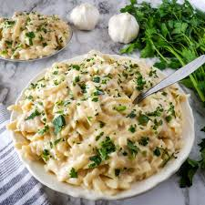

Creamy Chicken Pasta

The best Creamy Chicken Pasta you'll ever make
Creamy chicken pasta has been a family favourite for centuries. It's one of the most delicious pasta dishes ever made It's so creamy and satisfying! With unforgettable mouth watering flavour, you'll be able to impress your friends and family
Ingredients:
- 450g Chicken Breat (2 Chicken Breasts)
- 1 Onion
- 500 ml Heavy Cream
- 180g Shitake Mushrooms
- 180g Fettuccine Pasta
- 3 Garlic Cloves
- Parsley
- Oil
- Salt & Black Pepper
Steps
- Cut Chicken Breasts into 5 or 6 thin strips
- Add 2 tbsp of oil into a pan
- Heat the pan on low to medium heat
- Add Chicken Breast and cook until golden brown
- Remove the chicken, Add 1 tbsp of oil into the same pan
- Cut the Onion into small pieces, add onions to oiled pan & cook till soft
- Cook Pasta
- Cut mushrooms
- Add sliced mushrooms to Onions, stir frequently until soft
- Cut Garlic into small pieces and add to pan
- Pour Heavy Cream into the pan, simmer over medium heat till it thickens
- Add Chicken back to pan
- Cut Parsley and add to panl
- Add cooked pasta to pan and mix well